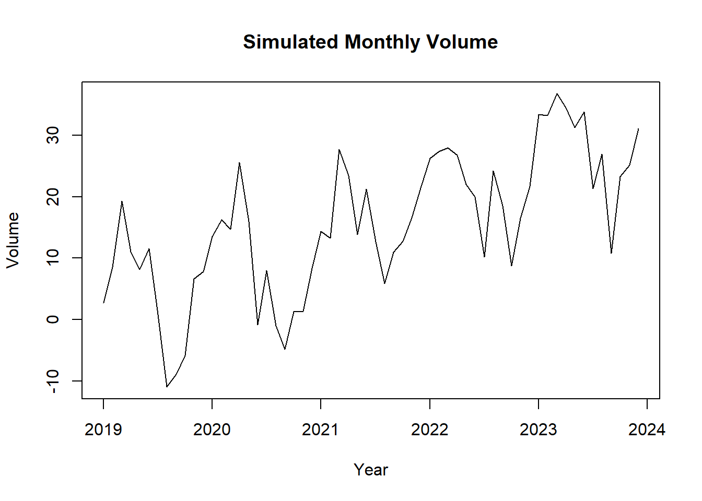

13 Ordinary Least Squares
Ordinary Least Squares is a method for estimating the relationship between variables using a linear regression model:
\(Y_i = \beta_0 + \beta_1 X_i + \epsilon_i\)
where:
\(Y\) = outcome (dependent variable)
\(X\) = explanatory variable(s) (independent variable/s)
\(\beta\) = coefficients we want to estimate
\(\epsilon\) = error term (everything affecting Y that is not X)
OLS chooses coefficient estimates that minimize the sum of squared residuals:
\(\sum (Y_i-\hat{Y}_i)^2\)
13.0.1 Key Assumptions Behind OLS
The most important assumption for unbiased estimates:
\(E[\epsilon|X] = 0\)
Meaning: The error term is NOT correlated with the explanatory variables.
If this holds:
OLS estimates are unbiased.
Interpretation of coefficients as causal effects becomes possible
13.1 Bias in OLS
Bias occurs when the expected value of an estimator differs from the true parameter:
\(E[\hat{\beta}]\neq\beta\)
What happens is that your regression overestimates or underestimates the true effect, (doesn’t show the effect!)
13.2 Endogeneity
A variable is endogenous if:
\(Cov(X,\epsilon) \neq 0\)
Some part of X is related to unbserved factors affecting Y. This violates the OLS assumption.
13.2.1 Sources of Endogeneity
Omitted Variable Bias
You leave out an important variable that affects both X and Y.
Example: Studying effect of education on wages but you did not include experience.
Experience affects both education (X) and wages (Y)
So, experience goes into the error term and correlates with X.
Reverse Causality
Simply, Y affects X
Example: Health influences income but income also influences health.
Measurement Error
13.3 General Description and notation of a Linear Regression
In R, the set.seed() function is used to set the random number generator’s seed. Random number generators in computer programming are not truly random; they are pseudo-random, meaning they generate sequences of numbers that appear random but are actually determined by an initial starting point called a seed. If you set the seed to a specific value, you can reproduce the same sequence of random numbers every time you run your program. This is important in many data analysis and simulation tasks, as it allows for the results to be reproducible.
Note: we will use the cat() function today. The cat() function is used for printing or concatenating objects to the console. It is primarily used to display text, numbers, or other R objects on the screen or to write them to a file. The name “cat” stands for “concatenate” or “concatenation,” as the function can be used to combine and display multiple objects.
## used (Mb) gc trigger (Mb) max used (Mb)
## Ncells 4038120 215.7 6548841 349.8 6548841 349.8
## Vcells 8846280 67.5 79570615 607.1 202265969 1543.2# Generate example data
set.seed(123)
n <- 50
x <- runif(n, 0, 10)
y <- 2 * x + rnorm(n, 0, 2)
# Create a scatterplot
ggplot(data = data.frame(x, y), aes(x = x, y = y)) +
geom_point() +
geom_smooth(method = "lm", se = FALSE, color = "blue") +
labs(title = "Scatterplot of Simulated Data",
x = "X", y = "Y")## `geom_smooth()` using formula = 'y ~ x'
13.4 Running and reporting OLS Regression
In R, the lm() function is used to fit linear regression models. Linear regression is a statistical method used to model the relationship between a dependent variable and one or more independent variables by finding the best-fitting linear equation. The lm() function is a fundamental tool for performing linear regression analysis in R.
Here’s how to use the lm() function in R:
model <- lm(dependent_variable ~ independent_variable1 + independent_variable2, data = your_data_frame)
Let’s break down the components of this function:
dependent_variable: This is the variable you want to predict or model. It is the response variable, typically numeric.independent_variable1,independent_variable2, …: These are the variables that you believe are related to the dependent variable. They are the predictor variables, which can be numeric or categorical.data: This argument specifies the data frame in which the variables are located. You should specify the name of your data frame here.
The lm() function returns a linear regression model object, which contains information about the estimated coefficients and other statistical details of the model.
After fitting the model, you can access various information and summaries, such as:
summary(model): This function provides a detailed summary of the regression model, including coefficients, standard errors, t-values, p-values, R-squared, and more.coef(model): This function returns the estimated coefficients of the model.predict(model, newdata): You can use this function to make predictions with the model, wherenewdatais a data frame containing the values of the independent variables for which you want to make predictions.
##
## Call:
## lm(formula = y ~ x)
##
## Residuals:
## Min 1Q Median 3Q Max
## -4.5116 -1.1157 -0.1313 1.0985 4.3723
##
## Coefficients:
## Estimate Std. Error t value Pr(>|t|)
## (Intercept) -0.2847 0.5442 -0.523 0.603
## x 2.0764 0.0913 22.743 <0.0000000000000002
##
## (Intercept)
## x ***
## ---
## Signif. codes:
## 0 '***' 0.001 '**' 0.01 '*' 0.05 '.' 0.1 ' ' 1
##
## Residual standard error: 1.881 on 48 degrees of freedom
## Multiple R-squared: 0.9151, Adjusted R-squared: 0.9133
## F-statistic: 517.2 on 1 and 48 DF, p-value: < 0.0000000000000002213.5 Interpretation of Coefficients
For numeric independent variables, a positive coefficient means that an increase in the independent variable is associated with an increase in the dependent variable, and a negative coefficient means the opposite.
For categorical independent variables (e.g., dummies for categories), the coefficients represent the difference in the dependent variable for that category compared to the reference category.
## Intercept (β₀): -0.2847054## Coefficient for X (β₁): 2.07634913.6 Goodness of Fit (F-Statistics and Adjusted R-squared)
The null hypothesis (H0) for the F-test is that all coefficients in the model are equal to zero, meaning that none of the independent variable/s have any effect on the dependent variable. The small p-value (<0.05) means we can reject the null hypothesis.
Note: to extract p-value of F-statistic you have to use the function pf() that gives the area, for the F distribution, to the left of the value x for two given degrees of freedom, df1 and df2.
## Adjusted R-squared: 0.9133112## F-statistic: 517.2401p_val = pf(summary(model)$fstatistic[1],summary(model)$fstatistic[2],summary(model)$fstatistic[3],lower.tail=FALSE)
cat("p-value:", p_val, "\n")## p-value: 0.00000000000000000000000000236441313.7 Assumption Diagnostics
In R, when you create a plot of a linear regression model (an OLS model) using the plot() function, it produces a set of diagnostic plots to help you assess the assumptions and goodness of fit of the model. These diagnostic plots are typically used to check if the model is a good fit for the data and whether the assumptions underlying linear regression are met. Here’s an explanation of each output produced by plot(model):
Residuals vs. Fitted Values (Partial Regression Plot):
This plot shows the relationship between the residuals (the differences between the observed values and the predicted values) and the fitted values (the predicted values from the model).
It is used to check for linearity, which is one of the key assumptions of linear regression. Ideally, you want to see a random scattering of points around a horizontal line, with no clear pattern.
If you see a pattern, such as a curve or funnel shape, it may indicate a violation of the linearity assumption.
Normal Q-Q (Quantile-Quantile) Plot:
This plot compares the distribution of the residuals to a theoretical normal distribution. If the residuals are normally distributed, the points should roughly follow a straight line.
Deviations from a straight line may indicate departures from normality in the residuals. For example, if the points bend upwards or downwards, it may indicate skewness or heavy-tailed residuals.
Scale-Location (Spread-Location) Plot:
This plot shows the square root of the absolute residuals against the fitted values. It is also known as a “spread vs. location” plot.
It is used to check for homoscedasticity, which means that the variability of the residuals is roughly constant across different levels of the fitted values.
Ideally, you want to see a random scattering of points around a horizontal line with roughly equal spread.
If the spread changes systematically with the fitted values (e.g., a funnel shape), it may indicate heteroscedasticity, which can lead to unreliable parameter estimates and hypothesis tests.
Residuals vs. Leverage Plot (Cook’s Distance Plot):
This plot displays the standardized residuals against the leverage values (a measure of how much an observation affects the regression coefficients). It is often used to identify influential data points.
Data points that are far from the other points in this plot have high leverage, and points above a certain threshold may be influential.
Influential points can have a significant impact on the model’s parameters, and it’s important to examine them for potential outliers or errors.
Cook’s Distance Plot:
Cook’s distance is a measure of the impact of each observation on the model’s coefficients. This plot shows the Cook’s distance for each observation.
Observations with a high Cook’s distance are potential outliers or influential points that can significantly affect the model. It is a useful tool for identifying data points that should be investigated further.
Multicollinearity
- Correlation Matrix: A simple way to start is by looking at the correlation matrix of the predictors. High correlation coefficients (close to -1 or 1) between pairs of predictors indicate potential multicollinearity. This can be done using the
cor()function.
- Correlation Matrix: A simple way to start is by looking at the correlation matrix of the predictors. High correlation coefficients (close to -1 or 1) between pairs of predictors indicate potential multicollinearity. This can be done using the

13.8 Real-World Example
We are going to use the sample dataset
## wage educ exper tenure
## 1 3.10 11 2 0
## 2 3.24 12 22 2
## 3 3.00 11 2 0
## 4 6.00 8 44 28
## 5 5.30 12 7 2
## 6 8.75 16 9 8Create a scatterplot
# Create a scatterplot
ggplot(data = sample_sub, aes(x = sample_sub$educ, y =sample_sub$wage)) +
geom_point() +
geom_smooth(method = "lm", se = FALSE, color = "blue") +
labs(title = "Scatterplot of Wage Data",
x = "Education", y = "Wage")## `geom_smooth()` using formula = 'y ~ x'
# Fit an OLS regression model
model.1 <- lm(wage ~ educ, data=sample_sub)
# Display the model summary
summary(model.1)##
## Call:
## lm(formula = wage ~ educ, data = sample_sub)
##
## Residuals:
## Min 1Q Median 3Q Max
## -5.3396 -2.1501 -0.9674 1.1921 16.6085
##
## Coefficients:
## Estimate Std. Error t value Pr(>|t|)
## (Intercept) -0.90485 0.68497 -1.321 0.187
## educ 0.54136 0.05325 10.167 <0.0000000000000002
##
## (Intercept)
## educ ***
## ---
## Signif. codes:
## 0 '***' 0.001 '**' 0.01 '*' 0.05 '.' 0.1 ' ' 1
##
## Residual standard error: 3.378 on 524 degrees of freedom
## Multiple R-squared: 0.1648, Adjusted R-squared: 0.1632
## F-statistic: 103.4 on 1 and 524 DF, p-value: < 0.00000000000000022